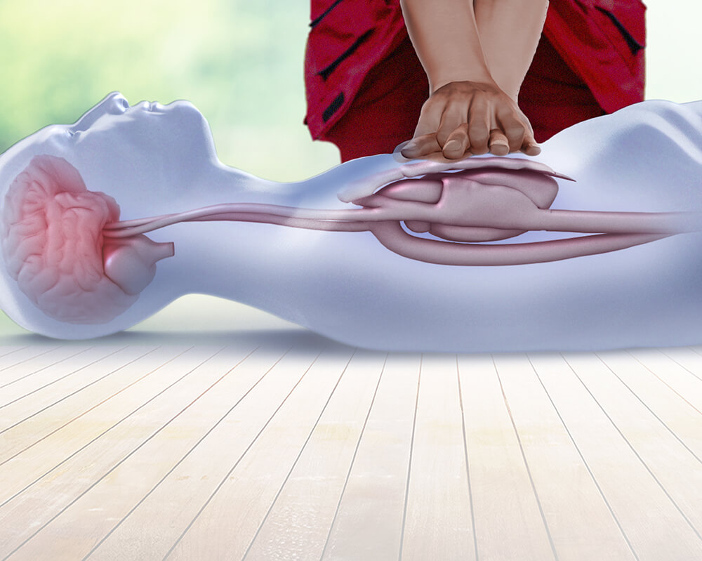
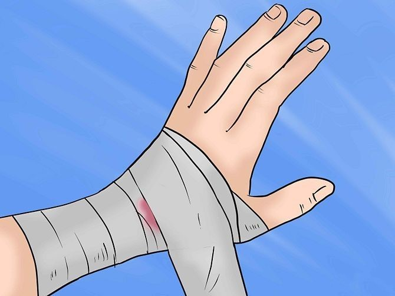
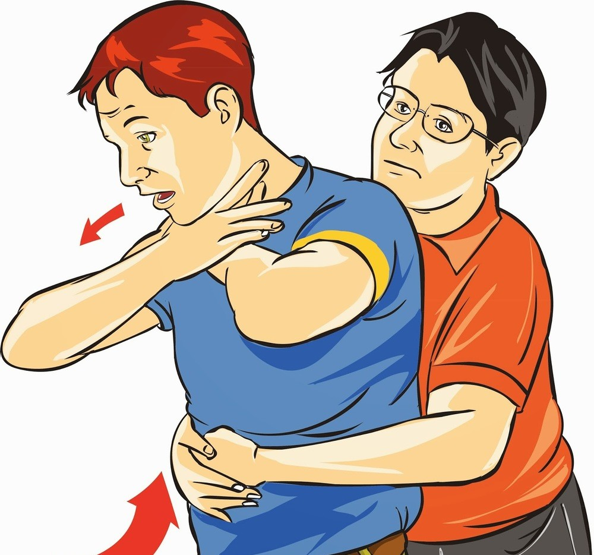
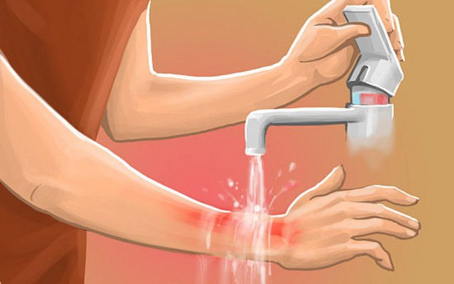
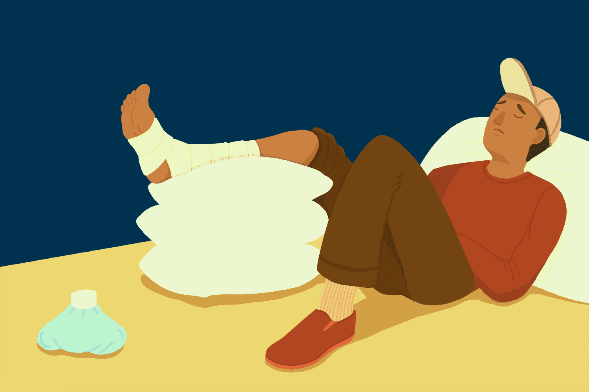
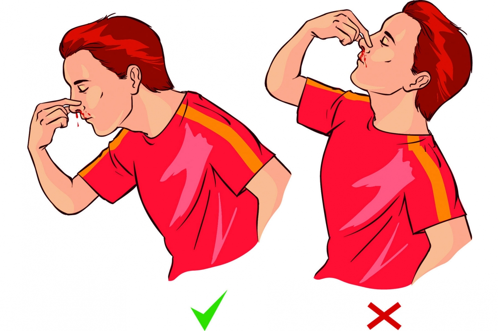

What is First Aid?
First aid is the initial and urgent care given to anyone who has suffered a small or serious injury or illness.
First aid keeps you prepared.
Its goals are to save lives, keep the situation from getting worse, or encourage recovery until medical help arrives.
First aid is typically administered by a person with basic medical training.
Basic first aid knowledge and skills are important for everyday situations because accidents and injuries can happen anywhere.
Knowing how to respond to an emergency can help save a life, prevent further harm, and comfort the injured person until professional help arrives.
It helps us spot the indicators that someone requires assistance, and then it prepares us to respond immediately.
While it may be as basic as correctly caring for wounds and scratches, it may also be a lifesaver, keeping someone alive until professional assistance becomes present.
That is why the value of first-aid training should never be underestimated.
Why is First Aid Important?
1. It preserves life.
2. It prevents further deterioration.
3. It relieves pain and discomfort.
4. It protects the unconscious.
5. It promotes recovery.
ABCs of First Aid
If someone is unconscious or unresponsive, the basic principle of first aid that you need to know is ABC: airway, breathing, and circulation.
- Airway: If someone’s not breathing, the first thing you need to do is open their airway.
- Breathing: If you have cleared a person’s airway but they’re still not breathing, provide rescue breathing.
- Circulation: As you are doing rescue breathing, perform chest compressions to keep the person’s blood circulating. If the person is not responsive, check their pulse. If their heart has stopped, provide chest compressions.
First Aid for a Stopped Heart
Cardiopulmonary resuscitation (CPR) is a hands-on emergency intervention used to restore heartbeats and breathing in someone who has gone into cardiac arrest.
CPR involves manual chest compressions and, in some cases, rescue "mouth-to-mouth" breathing.
Common causes of cardiac arrest are a heart attack or near-drowning.

Image Source
Procedure:
- Find a person nearby and instruct them to contact an ambulance.
- Start doing chest compressions on the person who needs help. Using both your hands, push down hard and fast in the center of the person’s chest. Let their chest come back up naturally between compressions. You may hear pops or snaps; this is normal.
- Keep going until someone with more training arrives.
First Aid for Bleeding
The color of the blood and how it’s leaving the body can give you a sense of the extent of the injury:
- Capillaries: Bleeding from the smallest blood vessels (capillaries) looks like a trickle. This kind of bleeding usually stops on its own.
- Veins: A consistent blood flow and blood that’s a dark red color is most likely coming from the veins. This type of bleeding can range from mild to severe.
- Arteries: Arteries are the largest blood vessels and carry a lot of oxygen. If they are injured, bright red blood will spurt out. Blood can be lost very fast with this kind of bleeding.

Image Source
Procedure:
- Put on disposable gloves if you have them. This will protect you from infectious diseases.
- Rinse the wound with water.
- Cover the wound with a gauze or cloth (e.g., towel, blanket, clothing).
- Apply direct pressure to stop the flow of blood and encourage clotting.
- Elevate the bleeding body part above the person’s heart if you can.
- Do not remove the cloth if it becomes soaked. Removing the first layer will interfere with the clotting process and result in more blood loss. Instead, add more layers if needed.
- Once bleeding has stopped, put a clean bandage on the wound.
Get medical help if:
- The wound is deep.
- The wound has widely separated sides.
- The injury oozes blood after pressure has been applied.
- The injury is from an animal or human bite.
- The injury is a puncture, burn, or electrical injury.
- You think there is arterial bleeding.
- Blood is soaking through the bandages.
- The bleeding is not stopping.
First Aid for Choking
Choking happens when a person’s windpipe (trachea) gets blocked by food or an object.
It is a serious event that can lead to unconsciousness or even death.
Signs of choking include:
- Gagging, gasping, or wheezing
- Inability to talk or make noise
- Turning blue in the face
- Grabbing at the throat
- Waving arms
- Looking panicked
If someone is choking, you should know how to use the Heimlich maneuver.
The Heimlich Maneuver is a series of abdominal thrusts that can help dislodge the thing a person is choking on.
This first aid technique should only be done if someone is truly choking.

Image Source
Procedure:
- Stand behind the person and lean them slightly forward.
- Put your arms around their waist.
- Clench your fist and place it between their belly button (navel) and rib cage.
- Grab your fist with your other hand.
- Pull your clenched fist sharply backward and upward under the person’s rib cage in five quick thrusts.
- Repeat until the object is coughed up.
First Aid for Burns
The severity of a burn is based on how deep in the skin it is and how big it is:
- First-degree burn: This kind of burn only affects the outer layer of skin and causes redness and swelling. It is considered a minor burn.
- Second-degree burn: This kind of burn affects two layers of skin and causes blistering, redness, and swelling. It is considered a major burn if it’s more than 3 inches wide or is on the face, hands, feet, genitals, buttocks, or over a major joint.
- Third-degree burn: This kind of burn affects deeper layers of skin and causes white or blackened skin that can be numb. It is always considered a major burn.

Image Source
Procedure:
For burns that are not an emergency, you can take these first aid steps.
- Flush the burned area with cool running water for several minutes. Do not use ice.
- Apply a light gauze bandage. If the burn is minor, you can put on an ointment, like aloe vera, before you cover it.
- Take a pain reliever if you need it.
- Do not break any blisters that form.
First Aid for Sprains
A sprain is an injury to the connective tissues that hold bones, cartilage, and joints together (ligaments).
Sprains are most often caused when the twisting of a joint overstretches or tears these tissues.
They tend to happen in the ankles, knees, and wrists.
Sprains often don’t require emergency treatment. However, you should get immediate medical care if the injured person:
- Has severe pain when they move or are touched
- Cannot put any weight on the injured joint
- Has increased bruising
- Has numbness or pins-and-needles near the sprain
- Shows signs of infection
- Has little or no improvement during the first week after the injury happens

Image Source
Procedure:
If emergency care is not needed, follow these first aid steps.
- Keep the limb as still as possible.
- Apply a cold pack.
- Elevate the injured part if you can do so safely.
- Use pain reliever medication for pain.
First Aid for Nosebleeds
Nosebleeds can have various causes. In children, the most common cause of a nosebleed is digital trauma—better known as picking your nose.

Image Source
Procedure:
- Lean slightly forward, not back.
- Pinch your nose just below the bridge. It needs to be high enough that the nostrils are not pinched closed.
- After five minutes, check to see if the bleeding has stopped. If not, continue pinching and check after another 10 minutes.
- Apply a cold pack to the bridge of your nose while you’re pinching.
It requires immediate attention if:
- The bleeding will not stop even after more than 15 minutes of direct pressure.
- There is a lot of blood loss.
- You have a hard time breathing.
- You’ve swallowed a lot of blood and vomited it up.
- You’ve had a serious injury or a blow to the head.
First Aid Kit
A basic first aid kit should contain the following:

Image Source